1 / 6

💻 TEKNOLOGI
AI + Hacker Dibahas Serius di Bali 🛡️
600 bos, regulator, dan pejabat kumpul 20 Oktober — geser buat detailnya →
2 / 6
🏖️
Forum Raksasa di Sanur
PT ITSEC Asia Tbk (kode saham CYBR) menggelar AI & Cybersecurity Executive Forum (AICX) 2026 pada 20 Oktober 2026 di Bali Beach Convention, Sanur, Bali.
Acara ini bagian dari Bali Tech Week 2026 (19–23 Oktober 2026) — bukan acara santai, tapi forum tingkat eksekutif.
3 / 6
👔
600 Orang, Semuanya Bos
Pesertanya sekitar 600 pemimpin perusahaan dan pengambil keputusan senior — CEO, CIO, CTO, CISO — plus pejabat pemerintah dan regulator.
Industrinya lintas sektor: keuangan, telekomunikasi, teknologi, energi, sampai manufaktur.
4 / 6
🧠
Dulu Cuma Siber, Sekarang AI Juga
Forum tahunan ini dulunya fokus keamanan siber doang. Tahun ini diperluas: tata kelola AI, perlindungan data, kedaulatan digital, kesiapan SDM, sampai antisipasi komputasi kuantum.
Soalnya AI makin nempel di operasional bisnis — dari analisis data sampai pengambilan keputusan.
5 / 6
💬
Kata Sang Bos ITSEC
Presiden Direktur ITSEC Asia Patrick Dannacher bilang, AI udah keluar dari fase coba-coba dan jadi bagian bisnis sehari-hari.
Menurutnya, pertanyaannya sekarang bukan "pakai AI atau enggak", tapi "gimana pakai AI dengan aman, bertanggung jawab, dan tetap ngasih nilai buat bisnis". Valid banget.
6 / 6
🤔
Efeknya ke lo apa?
AI yang makin canggih = serangan siber makin pinter juga. Phishing deepfake, akun palsu AI, bocoran data — semua makin sulit dibedain dari aslinya.
Keputusan di forum ini bakal ngaruh ke aturan main digital di Indonesia. Buat lo: aktifin 2FA, jangan asal klik link, dan waspada kalau ada "orang terdekat" nelpon minta transfer — bisa jadi suara AI.